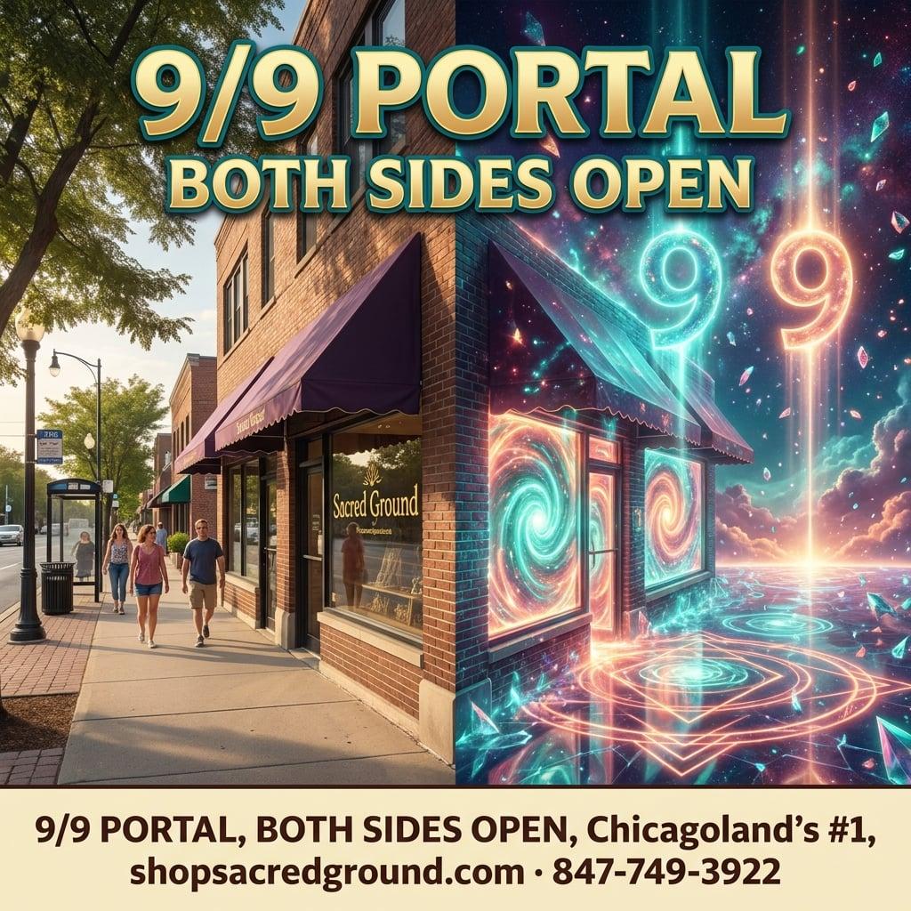

Green border = the afternoon mirror you already liked (28030). Purple = new deeper-cosmic morning options + a more cosmic mirror afternoon. Virgo night unchanged. Nothing published.

KEEPER · afternoon mirror you liked (28030) media 28030